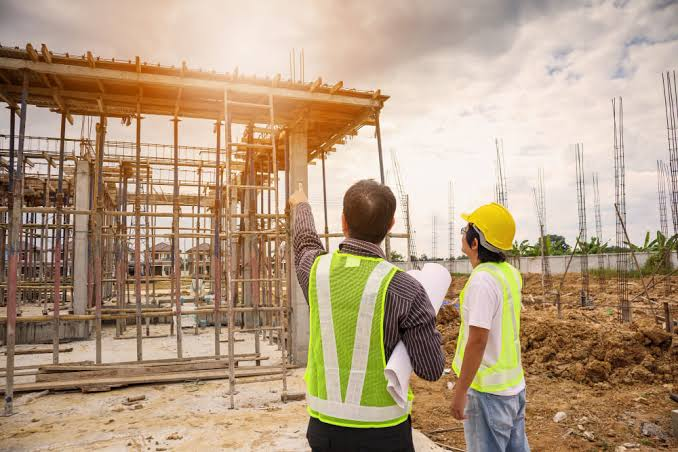

Presentació
Presentació de la empresa: "Construccions i Reformes [Driss Idrissi ]", una empresa familiar de paleteria amb més de 20 anys d'experiència en reformes integrals, estructures i manteniment. .
Objectiu del PTD: Digitalitzar la gestió d'obres i la relació amb el client per ser més eficients, reduir errors en els pressupostos i millorar la nostra petjada ecològica.

- Menú de navegació: Inici | Anàlisi | Economia Circular | Digitalització | Conclusions | Sobre mi.
- No només diguis que ets una empresa de paleteria, detalla les feines principals. Això ajuda a visualitzar el negoci: Reformes Integrals: Cuines, banys i renovació total d'habitatges. Obra Nova: Construcció d'estructures i cases des de zero. Manteniment Industrial: Reparacions per a naus i locals comercials. Assessorament Tècnic: Gràcies a la digitalització, oferim pressupostos tancats i seguiment online.
- Qualitat i Tradició: "Més de 20 anys d'experiència en el sector de la construcció." Innovació Digital: "Utilitzem les últimes eines tecnològiques per gestionar la teva obra sense errors." Compromís Sostenible: "Gestionem els residus de forma responsable amb el medi ambient."